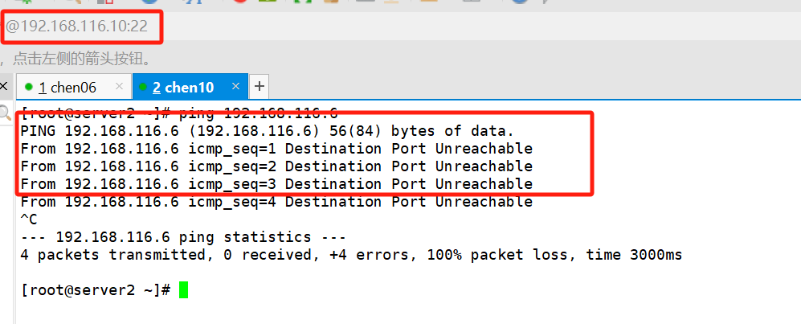

安全技术
入侵检测系统：
特点是不阻断任何网络访问、量化、定位来自内外网络的威胁情况，主要以提供报警和事后监督为主
入侵防御系统：
以透明模式工作，分析数据包的内容、如：溢出攻击、拒绝服务攻击、木马、蠕虫、系统漏洞等进行准确的分析判断，主动而有效的保护网络安全
防火墙：
隔离功能，工作在网络或主机的边缘，防止外部进入内部
防水墙：
与防火墙相对，防止内部信息传输到外部
防火墙
防火墙的分类
按保护范围划分：
主机防火墙：服务范围为当前一台主机
网络防火墙：服务范围为防火墙一侧的局域网
按实现方式划分：
硬件防火墙：在专用硬件级别实现部分功能的防火墙
软件防火墙：
按网络协议划分：
网络层防火墙：OSI模型下四层，又称为包过滤防火墙
应用层防火墙：proxy代理网关，OSI模型七层 （控制真实数据）
数据包：
mac头部 ip头部 协议/端口 7层协议（http ssh）真实数据 校验位
防火墙的功能：
收包，拆包，检查没问题，装包
收包，拆包，检查有问题，丢弃或者隔离
正向代理：FQ 代理的是客户端
绕开防火墙限制 加快访问速度
反向代理：代理的是服务端
负载均衡 高可用
防火墙工具
linux防火墙是由net filter组件提供的
iptables：由软件包iptables提供的命令行工具，工作在用户空间，用户编写规则
firewalld：由软件包firewalld firewalld-config提供，比较新的前端管理工具
nftable：此软件是centos 8 新特性
iptables的组成与概念
五链：控制流量的时机
pre-routing：路由选择判断前
post-routing：路由选择判断后
input：进入本机
output：出本机
forward：转发数据包
流量：发给你的 需要你转发的
选择合理的 链 做规则
四表：作用是存放
链决定了在是什么地方控制
表中有链，链中有规则
规则表：：如何控制流量
表的作用：容纳各种规则链
表的划分依据：防火墙规则的作用相似
四个规则表
raw表：确定是否对该数据包进行状态跟踪 （跟踪）
mangle表：为数据包设置标签 （标记）
nat表：修改数据包中的源、目标IP地址或端口 （地址转换）
filter表：确定是否放行数据包（过滤） （是否允许流量通过）
四表五链相对应
ptables -t 指定表 子命令 指定链 规则
iprables -vnL --line-numv：详细n：数字L：防火墙列表--line-num：显示行号iptables -t filter -A INPUT -s 192.168.0.1 -j DROP-t 指定表（默认是-t filter 可以不写）子命令-A：追加策略-D：删除-L：查看-R：替换策略-I：在序号前插入-F：清空策略-N：新加自定义链-P：修改默认策略-X：清空自定义链的规则，不影响其他链
DROP 已读不回REJECT 拒绝ACCEPT 允许LOG 日志 添加备注SNAT 源地址 转换DNAT 目的地址 转换-s 源地址-d 目的地址--sport--dport-p 支持 tcp udp icmp-i 进口网卡-o 出口网卡iptables -A INPUT -s 192.168.116.10 -j DROPiptables -A INPUT -s 192.168.116.10 -p icmp -j DROPiptables -A INPUT -s 192.168.116.10 -p tcp --dport 80 -j DROPiptables -A INPUT -i lo -j ACCEPTiptables -I INPUT 1 -s 192.168.116.10 -p icmp -j DROP
白名单：默认拒绝所有 只允许特定的人服务
黑名单：默认允许所有
查看iptables 的规则列表
iptables -vnL [ -t 表名 ]
给规则加上序号
iptables [ -t 表名 ] -vnL –line-num
添加规则 A I
iptables -A INPUT -s 192.168.0.0/24 -j ACCEPT 或 DROP 或 REJECT
A 在末尾追加
-I 需要指明序号
-I INPUT 1 在input 链的规则第一条前添加，我就变成第一条了
iptables -I INPUT 2 -s 192.168.0.0/24 -j ACCEPT
删除规则 D F
iptables [-t 表名 ] -F
iptables -D 链 规则序号
iptables -t filter -D INPUT 2 // 删除filter 表中 input 链中的 第二条规则
修改默认规则（默认是允许通过 黑名单）P
iptables -P INPUT DROP
iptables -P INPUT ACCEPT
替换规则 R
iptables -R INPUT 1 -s 192.168.116.1 -j ACCEPT
练习
#允许192.168.116.10地址接入
# -D 命令删除
#添加DROP规则
#ping超时
#添加REJECT规则，拒绝IP地址接入
#拒绝访问

#tcp 80 端口拒绝访问
#80端口拒绝访问，连接失败
#在序号1前添加一个新的规则，允许接入80端口
#文字版的网页服务httpd
#-F删除所有的规则
multiport扩展
以离散方式定义多端口匹配,最多指定15个端口
指定多个源/目标端口时，用逗号隔开
#拒绝 192.168.116.10IP地址 访问当前主机的tcp 80 8080 端口
iprange扩展
指明连续的ip地址范围（一般不是整个网络）
#指定源地址192.168.116.10到192.168.116.15 地址无法访问当前主机
#在指定范围内的主机拒绝访问
#在指定范围外的主机可以访问
string字符串
对报文中的应用层数据做字符串模式匹配检测
#将www.bilibili.com 导入http的配置文件中
#自建网页
#允许任意网段访问tcp80端口
#访问目标主机的网页
state
状态类型：
-
NEW：新发出请求；连接追踪信息库中不存在此连接的相关信息条目，因此，将其识别为第一次发出的请求
-
ESTABLISHED：NEW状态之后，连接追踪信息库中为其建立的条目失效之前期间内所进行的通信状态
-
RELATED：新发起的但与已有连接相关联的连接，如：ftp协议中的数据连接与命令连接之间的关系
-
INVALID：无效的连接，如flag标记不正确
-
UNTRACKED：未进行追踪的连接，如：raw表中关闭追踪
ipatables -A INPUT -m state --state NEW -j REJECTipatables -A INPUT -m state --state ESTABLISHED -j ACCEPT#不允许新用户访问，允许老用户访问
#新用户想要访问服务端被拒绝
#而老用户则继续保持访问
链接：https://www.cnblogs.com/chenjw0608/p/17865343.html
（版权归原作者所有，侵删）